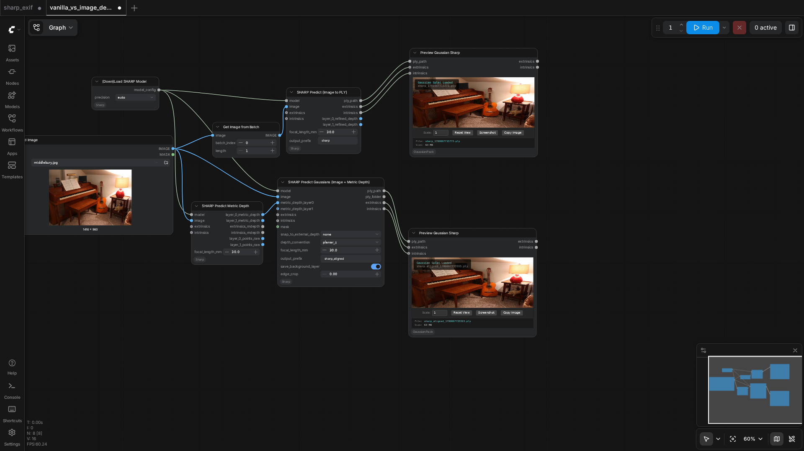

75.0%
3 passed
1 failed
3/4 tests
Workflows
No screenshot
pano
fail

sharp_basic
pass

sharp_exif
pass

vanilla_vs_image_depth_gaussians
pass
Failed Tests
pano
287.07s
Workflow execution failed: {'prompt_id': 'ea5e7c5c-722b-4f79-a44f-b0c160d591bf', 'node_id': '76', 'node_type': 'SharpPredictGaussiansFromMetricDepth', 'executed': ['73', '81', '59', '70', '62', '80', '60', '68', '87', '7', '89', '96', '61', '9'], 'exception_message': 'Allocation on device 0 would exceed allowed memory. (out of memory)\nCurrently allocated : 2.62 GiB\nRequested : 576.00 MiB\nDevice limit : 23.56 GiB\nFree (according to CUDA): 28.06 MiB\nPyTorch limit (set by user-supplied memory fraction)\n : 17179869184.00 GiB\n\nWorker traceback:\nTraceback (most recent call last):\n File "/tmp/comfyui_pvenv_dkunr1h2/persistent_worker.py", line 1762, in main\n result = method(**inputs)\n ^^^^^^^^^^^^^^^^\n File "/workspaces/Sharp-2116/ComfyUI/comfy_api/latest/_io.py", line 1892, in EXECUTE_NORMALIZED\n to_return = cls.execute(*args, **kwargs)\n ^^^^^^^^^^^^^^^^^^^^^^^^^^^^\n File "/tmp/comfytest-home/.ce/.pixi/envs/sharp-nodes/lib/python3.12/site-packages/torch/utils/_contextlib.py", line 124, in decorate_context\n return func(*args, **kwargs)\n ^^^^^^^^^^^^^^^^^^^^^\n File "/workspaces/Sharp-2116/ComfyUI/custom_nodes/ComfyUI-Sharp/nodes/predict_gaussians_from_depth.py", line 392, in execute\n monodepth_output, _ = predictor.encode(image_resized_pt)\n ^^^^^^^^^^^^^^^^^^^^^^^^^^^^^^^^^^\n File "/workspaces/Sharp-2116/ComfyUI/custom_nodes/ComfyUI-Sharp/nodes/sharp/model.py", line 2006, in encode\n monodepth_output = self.monodepth_model(image)\n ^^^^^^^^^^^^^^^^^^^^^^^^^^^\n File "/tmp/comfytest-home/.ce/.pixi/envs/sharp-nodes/lib/python3.12/site-packages/torch/nn/modules/module.py", line 1776, in _wrapped_call_impl\n return self._call_impl(*args, **kwargs)\n ^^^^^^^^^^^^^^^^^^^^^^^^^^^^^^^^\n File "/tmp/comfytest-home/.ce/.pixi/envs/sharp-nodes/lib/python3.12/site-packages/torch/nn/modules/module.py", line 1787, in _call_impl\n return forward_call(*args, **kwargs)\n ^^^^^^^^^^^^^^^^^^^^^^^^^^^^^\n File "/workspaces/Sharp-2116/ComfyUI/custom_nodes/ComfyUI-Sharp/nodes/sharp/model.py", line 1118, in forward\n decoder_features = self.monodepth_predictor.decoder(encoder_features)\n ^^^^^^^^^^^^^^^^^^^^^^^^^^^^^^^^^^^^^^^^^^^^^^^^^^\n File "/tmp/comfytest-home/.ce/.pixi/envs/sharp-nodes/lib/python3.12/site-packages/torch/nn/modules/module.py", line 1776, in _wrapped_call_impl\n return self._call_impl(*args, **kwargs)\n ^^^^^^^^^^^^^^^^^^^^^^^^^^^^^^^^\n File "/tmp/comfytest-home/.ce/.pixi/envs/sharp-nodes/lib/python3.12/site-packages/torch/nn/modules/module.py", line 1787, in _call_impl\n return forward_call(*args, **kwargs)\n ^^^^^^^^^^^^^^^^^^^^^^^^^^^^^\n File "/workspaces/Sharp-2116/ComfyUI/custom_nodes/ComfyUI-Sharp/nodes/sharp/model.py", line 970, in forward\n features = self.fusions[i](features, features_i)\n ^^^^^^^^^^^^^^^^^^^^^^^^^^^^^^^^^^^^^\n File "/tmp/comfytest-home/.ce/.pixi/envs/sharp-nodes/lib/python3.12/site-packages/torch/nn/modules/module.py", line 1776, in _wrapped_call_impl\n return self._call_impl(*args, **kwargs)\n ^^^^^^^^^^^^^^^^^^^^^^^^^^^^^^^^\n File "/tmp/comfytest-home/.ce/.pixi/envs/sharp-nodes/lib/python3.12/site-packages/torch/nn/modules/module.py", line 1787, in _call_impl\n return forward_call(*args, **kwargs)\n ^^^^^^^^^^^^^^^^^^^^^^^^^^^^^\n File "/workspaces/Sharp-2116/ComfyUI/custom_nodes/ComfyUI-Sharp/nodes/sharp/model.py", line 860, in forward\n x = self.resnet2(x)\n ^^^^^^^^^^^^^^^\n File "/tmp/comfytest-home/.ce/.pixi/envs/sharp-nodes/lib/python3.12/site-packages/torch/nn/modules/module.py", line 1776, in _wrapped_call_impl\n return self._call_impl(*args, **kwargs)\n ^^^^^^^^^^^^^^^^^^^^^^^^^^^^^^^^\n File "/tmp/comfytest-home/.ce/.pixi/envs/sharp-nodes/lib/python3.12/site-packages/torch/nn/modules/module.py", line 1787, in _call_impl\n return forward_call(*args, **kwargs)\n ^^^^^^^^^^^^^^^^^^^^^^^^^^^^^\n File "/workspaces/Sharp-2116/ComfyUI/custom_nodes/ComfyUI-Sharp/nodes/sharp/model.py", line 766, in forward\n delta_x = self.residual(x)\n ^^^^^^^^^^^^^^^^\n File "/tmp/comfytest-home/.ce/.pixi/envs/sharp-nodes/lib/python3.12/site-packages/torch/nn/modules/module.py", line 1776, in _wrapped_call_impl\n return self._call_impl(*args, **kwargs)\n ^^^^^^^^^^^^^^^^^^^^^^^^^^^^^^^^\n File "/tmp/comfytest-home/.ce/.pixi/envs/sharp-nodes/lib/python3.12/site-packages/torch/nn/modules/module.py", line 1787, in _call_impl\n return forward_call(*args, **kwargs)\n ^^^^^^^^^^^^^^^^^^^^^^^^^^^^^\n File "/tmp/comfytest-home/.ce/.pixi/envs/sharp-nodes/lib/python3.12/site-packages/torch/nn/modules/container.py", line 253, in forward\n input = module(input)\n ^^^^^^^^^^^^^\n File "/tmp/comfytest-home/.ce/.pixi/envs/sharp-nodes/lib/python3.12/site-packages/torch/nn/modules/module.py", line 1776, in _wrapped_call_impl\n return self._call_impl(*args, **kwargs)\n ^^^^^^^^^^^^^^^^^^^^^^^^^^^^^^^^\n File "/tmp/comfytest-home/.ce/.pixi/envs/sharp-nodes/lib/python3.12/site-packages/torch/nn/modules/module.py", line 1787, in _call_impl\n return forward_call(*args, **kwargs)\n ^^^^^^^^^^^^^^^^^^^^^^^^^^^^^\n File "/tmp/comfytest-home/.ce/.pixi/envs/sharp-nodes/lib/python3.12/site-packages/torch/nn/modules/activation.py", line 143, in forward\n return F.relu(input, inplace=self.inplace)\n ^^^^^^^^^^^^^^^^^^^^^^^^^^^^^^^^^^^\n File "/tmp/comfytest-home/.ce/.pixi/envs/sharp-nodes/lib/python3.12/site-packages/torch/nn/functional.py", line 1721, in relu\n result = torch.relu(input)\n ^^^^^^^^^^^^^^^^^\ntorch.OutOfMemoryError: Allocation on device 0 would exceed allowed memory. (out of memory)\nCurrently allocated : 2.62 GiB\nRequested : 576.00 MiB\nDevice limit : 23.56 GiB\nFree (according to CUDA): 28.06 MiB\nPyTorch limit (set by user-supplied memory fraction)\n : 17179869184.00 GiB\n\n', 'exception_type': 'comfy_env.isolation.workers.base.WorkerError', 'traceback': [' File "/workspaces/Sharp-2116/ComfyUI/execution.py", line 536, in execute\n output_data, output_ui, has_subgraph, has_pending_tasks = await get_output_data(prompt_id, unique_id, obj, input_data_all, execution_block_cb=execution_block_cb, pre_execute_cb=pre_execute_cb, v3_data=v3_data)\n ^^^^^^^^^^^^^^^^^^^^^^^^^^^^^^^^^^^^^^^^^^^^^^^^^^^^^^^^^^^^^^^^^^^^^^^^^^^^^^^^^^^^^^^^^^^^^^^^^^^^^^^^^^^^^^^^^^^^^^^^^^^^^^^^^^^^^^^^^^^^^^^^^^^^^^^\n', ' File "/workspaces/Sharp-2116/ComfyUI/execution.py", line 336, in get_output_data\n return_values = await _async_map_node_over_list(prompt_id, unique_id, obj, input_data_all, obj.FUNCTION, allow_interrupt=True, execution_block_cb=execution_block_cb, pre_execute_cb=pre_execute_cb, v3_data=v3_data)\n ^^^^^^^^^^^^^^^^^^^^^^^^^^^^^^^^^^^^^^^^^^^^^^^^^^^^^^^^^^^^^^^^^^^^^^^^^^^^^^^^^^^^^^^^^^^^^^^^^^^^^^^^^^^^^^^^^^^^^^^^^^^^^^^^^^^^^^^^^^^^^^^^^^^^^^^^^^^^^^^^^^^^^^^^^^^^^^^^^^^^^^^^^^^^^^^^^^^^^\n', ' File "/workspaces/Sharp-2116/ComfyUI/execution.py", line 310, in _async_map_node_over_list\n await process_inputs(input_dict, i)\n', ' File "/workspaces/Sharp-2116/ComfyUI/execution.py", line 298, in process_inputs\n result = f(**inputs)\n ^^^^^^^^^^^\n', ' File "/workspaces/Sharp-2116/.venv/lib/python3.12/site-packages/comfy_env/isolation/metadata.py", line 556, in proxy\n result = worker.call_method(\n ^^^^^^^^^^^^^^^^^^^\n', ' File "/workspaces/Sharp-2116/.venv/lib/python3.12/site-packages/comfy_env/isolation/workers/subprocess.py", line 674, in call_method\n raise WorkerError(\n'], 'current_inputs': {'snap_to_external_depth': ['none'], 'depth_convention': ['planar_z'], 'focal_length_mm': [30], 'output_prefix': ['sharp_aligned'], 'save_background_layer': [True], 'edge_crop': [0], 'model': ["{'model_path': '/workspaces/Sharp-2116/ComfyUI/models/sharp/sharp_2572gikvuh.pt', 'precision': 'auto', 'dtype': 'bf16'}"], 'image': ['tensor([[[[0.2295, 0.1593, 0.1320],\n [0.2225, 0.1553, 0.1284],\n [0.2150, 0.1509, 0.1239],\n ...,\n [0.2200, 0.1668, 0.1292],\n [0.2211, 0.1688, 0.1288],\n [0.2225, 0.1713, 0.1286]],\n\n [[0.2374, 0.1658, 0.1388],\n [0.2252, 0.1560, 0.1298],\n [0.2171, 0.1502, 0.1235],\n ...,\n [0.2197, 0.1685, 0.1281],\n [0.2201, 0.1689, 0.1268],\n [0.2212, 0.1701, 0.1276]],\n\n [[0.2464, 0.1742, 0.1473],\n [0.2275, 0.1569, 0.1334],\n [0.2201, 0.1510, 0.1257],\n ...,\n [0.2234, 0.1717, 0.1320],\n [0.2229, 0.1719, 0.1304],\n [0.2228, 0.1719, 0.1311]],\n\n ...,\n\n [[0.3665, 0.2781, 0.2253],\n [0.3601, 0.2719, 0.2171],\n [0.3566, 0.2677, 0.2108],\n ...,\n [0.2097, 0.1555, 0.1290],\n [0.2147, 0.1605, 0.1336],\n [0.2204, 0.1663, 0.1390]],\n\n [[0.3594, 0.2736, 0.2191],\n [0.3577, 0.2701, 0.2141],\n [0.3563, 0.2668, 0.2093],\n ...,\n [0.2086, 0.1535, 0.1266],\n [0.2103, 0.1553, 0.1273],\n [0.2180, 0.1627, 0.1350]],\n\n [[0.3578, 0.2721, 0.2183],\n [0.3595, 0.2715, 0.2161],\n [0.3605, 0.2708, 0.2139],\n ...,\n [0.2117, 0.1558, 0.1290],\n [0.2083, 0.1533, 0.1242],\n [0.2139, 0.1583, 0.1295]]],\n\n\n [[[0.2412, 0.1888, 0.1523],\n [0.2363, 0.1820, 0.1465],\n [0.2291, 0.1742, 0.1387],\n ...,\n [0.1693, 0.1221, 0.0941],\n [0.1688, 0.1234, 0.0941],\n [0.1683, 0.1251, 0.0937]],\n\n [[0.2309, 0.1833, 0.1445],\n [0.2265, 0.1767, 0.1392],\n [0.2219, 0.1697, 0.1337],\n ...,\n [0.1713, 0.1232, 0.0947],\n [0.1691, 0.1248, 0.0949],\n [0.1661, 0.1253, 0.0936]],\n\n [[0.2208, 0.1714, 0.1346],\n [0.2167, 0.1676, 0.1308],\n [0.2142, 0.1646, 0.1283],\n ...,\n [0.1714, 0.1250, 0.0977],\n [0.1672, 0.1255, 0.0958],\n [0.1650, 0.1273, 0.0962]],\n\n ...,\n\n [[0.0963, 0.0708, 0.0621],\n [0.0980, 0.0710, 0.0624],\n [0.0989, 0.0702, 0.0622],\n ...,\n [0.0971, 0.0777, 0.0620],\n [0.0962, 0.0750, 0.0593],\n [0.0958, 0.0745, 0.0588]],\n\n [[0.1054, 0.0740, 0.0679],\n [0.1094, 0.0769, 0.0696],\n [0.1044, 0.0721, 0.0642],\n ...,\n [0.0973, 0.0776, 0.0619],\n [0.0959, 0.0744, 0.0588],\n [0.0945, 0.0715, 0.0558]],\n\n [[0.1072, 0.0748, 0.0688],\n [0.1138, 0.0799, 0.0721],\n [0.0975, 0.0648, 0.0569],\n ...,\n [0.0981, 0.0783, 0.0627],\n [0.0970, 0.0759, 0.0603],\n [0.0963, 0.0736, 0.0579]]],\n\n\n [[[0.0865, 0.0314, 0.0133],\n [0.0866, 0.0314, 0.0165],\n [0.0868, 0.0314, 0.0195],\n ...,\n [0.2040, 0.1495, 0.1230],\n [0.2041, 0.1514, 0.1244],\n [0.2042, 0.1528, 0.1257]],\n\n [[0.0881, 0.0317, 0.0138],\n [0.0879, 0.0314, 0.0155],\n [0.0881, 0.0314, 0.0181],\n ...,\n [0.2048, 0.1499, 0.1252],\n [0.2053, 0.1522, 0.1266],\n [0.2065, 0.1523, 0.1270]],\n\n [[0.0905, 0.0333, 0.0176],\n [0.0892, 0.0314, 0.0152],\n [0.0893, 0.0314, 0.0173],\n ...,\n [0.2061, 0.1509, 0.1274],\n [0.2072, 0.1528, 0.1284],\n [0.2087, 0.1523, 0.1282]],\n\n ...,\n\n [[0.1964, 0.1389, 0.1240],\n [0.1976, 0.1409, 0.1305],\n [0.1976, 0.1419, 0.1358],\n ...,\n [0.1501, 0.1145, 0.0873],\n [0.1625, 0.1256, 0.0971],\n [0.1701, 0.1327, 0.1036]],\n\n [[0.1935, 0.1386, 0.1295],\n [0.1939, 0.1405, 0.1341],\n [0.1910, 0.1400, 0.1334],\n ...,\n [0.1437, 0.1112, 0.0853],\n [0.1518, 0.1172, 0.0883],\n [0.1623, 0.1267, 0.0961]],\n\n [[0.1916, 0.1419, 0.1339],\n [0.1899, 0.1417, 0.1342],\n [0.1878, 0.1407, 0.1311],\n ...,\n [0.1386, 0.1090, 0.0864],\n [0.1440, 0.1114, 0.0831],\n [0.1536, 0.1179, 0.0862]]],\n\n\n ...,\n\n\n [[[0.2294, 0.1672, 0.1355],\n [0.2236, 0.1641, 0.1311],\n [0.2163, 0.1611, 0.1260],\n ...,\n [0.0688, 0.0239, 0.0121],\n [0.0751, 0.0308, 0.0191],\n [0.0801, 0.0350, 0.0240]],\n\n [[0.2258, 0.1632, 0.1318],\n [0.2212, 0.1602, 0.1280],\n [0.2155, 0.1576, 0.1238],\n ...,\n [0.0730, 0.0270, 0.0153],\n [0.0816, 0.0358, 0.0241],\n [0.0889, 0.0432, 0.0316]],\n\n [[0.2235, 0.1605, 0.1294],\n [0.2195, 0.1567, 0.1254],\n [0.2152, 0.1542, 0.1219],\n ...,\n [0.0763, 0.0296, 0.0178],\n [0.0868, 0.0395, 0.0278],\n [0.0909, 0.0423, 0.0316]],\n\n ...,\n\n [[0.1235, 0.0549, 0.0451],\n [0.1233, 0.0549, 0.0448],\n [0.1227, 0.0535, 0.0432],\n ...,\n [0.1183, 0.0819, 0.0830],\n [0.1113, 0.0793, 0.0789],\n [0.1014, 0.0748, 0.0719]],\n\n [[0.1236, 0.0549, 0.0452],\n [0.1247, 0.0549, 0.0463],\n [0.1253, 0.0533, 0.0439],\n ...,\n [0.1214, 0.0827, 0.0828],\n [0.1186, 0.0829, 0.0829],\n [0.1125, 0.0810, 0.0798]],\n\n [[0.1240, 0.0545, 0.0453],\n [0.1239, 0.0523, 0.0452],\n [0.1252, 0.0507, 0.0419],\n ...,\n [0.1300, 0.0895, 0.0867],\n [0.1250, 0.0864, 0.0856],\n [0.1221, 0.0860, 0.0860]]],\n\n\n [[[0.2006, 0.1485, 0.1144],\n [0.1982, 0.1450, 0.1119],\n [0.1947, 0.1413, 0.1084],\n ...,\n [0.1985, 0.1450, 0.1208],\n [0.1962, 0.1463, 0.1195],\n [0.1968, 0.1490, 0.1210]],\n\n [[0.2008, 0.1498, 0.1145],\n [0.1966, 0.1450, 0.1103],\n [0.1936, 0.1420, 0.1073],\n ...,\n [0.1978, 0.1447, 0.1185],\n [0.1947, 0.1452, 0.1164],\n [0.1947, 0.1475, 0.1173]],\n\n [[0.1994, 0.1475, 0.1122],\n [0.1931, 0.1421, 0.1068],\n [0.1919, 0.1402, 0.1047],\n ...,\n [0.1988, 0.1479, 0.1179],\n [0.1966, 0.1495, 0.1167],\n [0.1974, 0.1489, 0.1185]],\n\n ...,\n\n [[0.0689, 0.0305, 0.0157],\n [0.0718, 0.0353, 0.0193],\n [0.0746, 0.0403, 0.0233],\n ...,\n [0.1382, 0.1091, 0.1143],\n [0.1269, 0.0988, 0.0973],\n [0.1322, 0.1058, 0.0998]],\n\n [[0.0783, 0.0366, 0.0174],\n [0.0817, 0.0428, 0.0229],\n [0.0855, 0.0496, 0.0291],\n ...,\n [0.1647, 0.1395, 0.1542],\n [0.1109, 0.0874, 0.0919],\n [0.1014, 0.0805, 0.0808]],\n\n [[0.0970, 0.0558, 0.0313],\n [0.0995, 0.0608, 0.0361],\n [0.1021, 0.0648, 0.0402],\n ...,\n [0.3396, 0.3138, 0.3366],\n [0.2739, 0.2498, 0.2654],\n [0.2146, 0.1927, 0.2023]]],\n\n\n [[[0.1389, 0.0976, 0.0712],\n [0.1365, 0.0967, 0.0673],\n [0.1362, 0.0969, 0.0657],\n ...,\n [0.2057, 0.1441, 0.1224],\n [0.2057, 0.1430, 0.1196],\n [0.2062, 0.1427, 0.1187]],\n\n [[0.1367, 0.0942, 0.0694],\n [0.1352, 0.0938, 0.0645],\n [0.1350, 0.0940, 0.0613],\n ...,\n [0.1922, 0.1319, 0.1134],\n [0.1958, 0.1341, 0.1133],\n [0.1963, 0.1337, 0.1112]],\n\n [[0.1350, 0.0907, 0.0636],\n [0.1350, 0.0922, 0.0605],\n [0.1356, 0.0928, 0.0585],\n ...,\n [0.1870, 0.1274, 0.1097],\n [0.1912, 0.1293, 0.1101],\n [0.1962, 0.1330, 0.1118]],\n\n ...,\n\n [[0.1043, 0.0973, 0.0717],\n [0.1044, 0.0976, 0.0753],\n [0.1046, 0.0980, 0.0794],\n ...,\n [0.4337, 0.2547, 0.1783],\n [0.4269, 0.2507, 0.1767],\n [0.4135, 0.2373, 0.1657]],\n\n [[0.1020, 0.0964, 0.0675],\n [0.1027, 0.0973, 0.0730],\n [0.1029, 0.0969, 0.0766],\n ...,\n [0.4263, 0.2455, 0.1721],\n [0.4254, 0.2492, 0.1784],\n [0.4090, 0.2359, 0.1668]],\n\n [[0.1001, 0.0961, 0.0648],\n [0.1015, 0.0976, 0.0721],\n [0.1008, 0.0949, 0.0734],\n ...,\n [0.4201, 0.2376, 0.1669],\n [0.4196, 0.2416, 0.1739],\n [0.4068, 0.2344, 0.1683]]]])'], 'metric_depth_layer0': ['tensor([[[[0.5945, 0.5945, 0.5945],\n [0.5944, 0.5944, 0.5944],\n [0.5944, 0.5944, 0.5944],\n ...,\n [0.5005, 0.5005, 0.5005],\n [0.5000, 0.5000, 0.5000],\n [0.4995, 0.4995, 0.4995]],\n\n [[0.5949, 0.5949, 0.5949],\n [0.5949, 0.5949, 0.5949],\n [0.5948, 0.5948, 0.5948],\n ...,\n [0.5001, 0.5001, 0.5001],\n [0.4996, 0.4996, 0.4996],\n [0.4992, 0.4992, 0.4992]],\n\n [[0.5954, 0.5954, 0.5954],\n [0.5953, 0.5953, 0.5953],\n [0.5953, 0.5953, 0.5953],\n ...,\n [0.4998, 0.4998, 0.4998],\n [0.4993, 0.4993, 0.4993],\n [0.4988, 0.4988, 0.4988]],\n\n ...,\n\n [[0.8991, 0.8991, 0.8991],\n [0.8956, 0.8956, 0.8956],\n [0.8923, 0.8923, 0.8923],\n ...,\n [0.2245, 0.2245, 0.2245],\n [0.2244, 0.2244, 0.2244],\n [0.2243, 0.2243, 0.2243]],\n\n [[0.8969, 0.8969, 0.8969],\n [0.8935, 0.8935, 0.8935],\n [0.8901, 0.8901, 0.8901],\n ...,\n [0.2245, 0.2245, 0.2245],\n [0.2243, 0.2243, 0.2243],\n [0.2242, 0.2242, 0.2242]],\n\n [[0.8947, 0.8947, 0.8947],\n [0.8913, 0.8913, 0.8913],\n [0.8880, 0.8880, 0.8880],\n ...,\n [0.2244, 0.2244, 0.2244],\n [0.2243, 0.2243, 0.2243],\n [0.2241, 0.2241, 0.2241]]],\n\n\n [[[0.4448, 0.4448, 0.4448],\n [0.4452, 0.4452, 0.4452],\n [0.4456, 0.4456, 0.4456],\n ...,\n [0.6041, 0.6041, 0.6041],\n [0.6041, 0.6041, 0.6041],\n [0.6042, 0.6042, 0.6042]],\n\n [[0.4453, 0.4453, 0.4453],\n [0.4457, 0.4457, 0.4457],\n [0.4461, 0.4461, 0.4461],\n ...,\n [0.6044, 0.6044, 0.6044],\n [0.6045, 0.6045, 0.6045],\n [0.6045, 0.6045, 0.6045]],\n\n [[0.4458, 0.4458, 0.4458],\n [0.4462, 0.4462, 0.4462],\n [0.4465, 0.4465, 0.4465],\n ...,\n [0.6048, 0.6048, 0.6048],\n [0.6048, 0.6048, 0.6048],\n [0.6049, 0.6049, 0.6049]],\n\n ...,\n\n [[0.8155, 0.8155, 0.8155],\n [0.8161, 0.8161, 0.8161],\n [0.8167, 0.8167, 0.8167],\n ...,\n [0.9889, 0.9889, 0.9889],\n [0.9884, 0.9884, 0.9884],\n [0.9879, 0.9879, 0.9879]],\n\n [[0.8152, 0.8152, 0.8152],\n [0.8158, 0.8158, 0.8158],\n [0.8164, 0.8164, 0.8164],\n ...,\n [0.9884, 0.9884, 0.9884],\n [0.9879, 0.9879, 0.9879],\n [0.9874, 0.9874, 0.9874]],\n\n [[0.8149, 0.8149, 0.8149],\n [0.8155, 0.8155, 0.8155],\n [0.8161, 0.8161, 0.8161],\n ...,\n [0.9880, 0.9880, 0.9880],\n [0.9875, 0.9875, 0.9875],\n [0.9870, 0.9870, 0.9870]]],\n\n\n [[[0.6090, 0.6090, 0.6090],\n [0.6092, 0.6092, 0.6092],\n [0.6094, 0.6094, 0.6094],\n ...,\n [0.2262, 0.2262, 0.2262],\n [0.2261, 0.2261, 0.2261],\n [0.2260, 0.2260, 0.2260]],\n\n [[0.6093, 0.6093, 0.6093],\n [0.6095, 0.6095, 0.6095],\n [0.6097, 0.6097, 0.6097],\n ...,\n [0.2263, 0.2263, 0.2263],\n [0.2262, 0.2262, 0.2262],\n [0.2261, 0.2261, 0.2261]],\n\n [[0.6096, 0.6096, 0.6096],\n [0.6098, 0.6098, 0.6098],\n [0.6100, 0.6100, 0.6100],\n ...,\n [0.2264, 0.2264, 0.2264],\n [0.2264, 0.2264, 0.2264],\n [0.2263, 0.2263, 0.2263]],\n\n ...,\n\n [[0.6546, 0.6546, 0.6546],\n [0.6546, 0.6546, 0.6546],\n [0.6546, 0.6546, 0.6546],\n ...,\n [0.6347, 0.6347, 0.6347],\n [0.6348, 0.6348, 0.6348],\n [0.6348, 0.6348, 0.6348]],\n\n [[0.6543, 0.6543, 0.6543],\n [0.6543, 0.6543, 0.6543],\n [0.6543, 0.6543, 0.6543],\n ...,\n [0.6344, 0.6344, 0.6344],\n [0.6344, 0.6344, 0.6344],\n [0.6344, 0.6344, 0.6344]],\n\n [[0.6540, 0.6540, 0.6540],\n [0.6540, 0.6540, 0.6540],\n [0.6540, 0.6540, 0.6540],\n ...,\n [0.6340, 0.6340, 0.6340],\n [0.6341, 0.6341, 0.6341],\n [0.6341, 0.6341, 0.6341]]],\n\n\n ...,\n\n\n [[[0.7529, 0.7529, 0.7529],\n [0.7529, 0.7529, 0.7529],\n [0.7529, 0.7529, 0.7529],\n ...,\n [0.4330, 0.4330, 0.4330],\n [0.4329, 0.4329, 0.4329],\n [0.4327, 0.4327, 0.4327]],\n\n [[0.7538, 0.7538, 0.7538],\n [0.7538, 0.7538, 0.7538],\n [0.7538, 0.7538, 0.7538],\n ...,\n [0.4334, 0.4334, 0.4334],\n [0.4333, 0.4333, 0.4333],\n [0.4331, 0.4331, 0.4331]],\n\n [[0.7547, 0.7547, 0.7547],\n [0.7547, 0.7547, 0.7547],\n [0.7547, 0.7547, 0.7547],\n ...,\n [0.4338, 0.4338, 0.4338],\n [0.4337, 0.4337, 0.4337],\n [0.4335, 0.4335, 0.4335]],\n\n ...,\n\n [[0.8059, 0.8059, 0.8059],\n [0.8064, 0.8064, 0.8064],\n [0.8069, 0.8069, 0.8069],\n ...,\n [0.4864, 0.4864, 0.4864],\n [0.4862, 0.4862, 0.4862],\n [0.4859, 0.4859, 0.4859]],\n\n [[0.8055, 0.8055, 0.8055],\n [0.8061, 0.8061, 0.8061],\n [0.8066, 0.8066, 0.8066],\n ...,\n [0.4860, 0.4860, 0.4860],\n [0.4857, 0.4857, 0.4857],\n [0.4855, 0.4855, 0.4855]],\n\n [[0.8052, 0.8052, 0.8052],\n [0.8057, 0.8057, 0.8057],\n [0.8063, 0.8063, 0.8063],\n ...,\n [0.4855, 0.4855, 0.4855],\n [0.4853, 0.4853, 0.4853],\n [0.4850, 0.4850, 0.4850]]],\n\n\n [[[0.6092, 0.6092, 0.6092],\n [0.6092, 0.6092, 0.6092],\n [0.6091, 0.6091, 0.6091],\n ...,\n [0.5786, 0.5786, 0.5786],\n [0.5786, 0.5786, 0.5786],\n [0.5785, 0.5785, 0.5785]],\n\n [[0.6097, 0.6097, 0.6097],\n [0.6097, 0.6097, 0.6097],\n [0.6096, 0.6096, 0.6096],\n ...,\n [0.5791, 0.5791, 0.5791],\n [0.5790, 0.5790, 0.5790],\n [0.5790, 0.5790, 0.5790]],\n\n [[0.6102, 0.6102, 0.6102],\n [0.6102, 0.6102, 0.6102],\n [0.6102, 0.6102, 0.6102],\n ...,\n [0.5795, 0.5795, 0.5795],\n [0.5795, 0.5795, 0.5795],\n [0.5795, 0.5795, 0.5795]],\n\n ...,\n\n [[0.9890, 0.9890, 0.9890],\n [0.9895, 0.9895, 0.9895],\n [0.9899, 0.9899, 0.9899],\n ...,\n [1.3732, 1.3732, 1.3732],\n [1.3720, 1.3720, 1.3720],\n [1.3709, 1.3709, 1.3709]],\n\n [[0.9887, 0.9887, 0.9887],\n [0.9891, 0.9891, 0.9891],\n [0.9896, 0.9896, 0.9896],\n ...,\n [1.3725, 1.3725, 1.3725],\n [1.3716, 1.3716, 1.3716],\n [1.3705, 1.3705, 1.3705]],\n\n [[0.9884, 0.9884, 0.9884],\n [0.9888, 0.9888, 0.9888],\n [0.9892, 0.9892, 0.9892],\n ...,\n [1.3712, 1.3712, 1.3712],\n [1.3703, 1.3703, 1.3703],\n [1.3694, 1.3694, 1.3694]]],\n\n\n [[[0.5974, 0.5974, 0.5974],\n [0.5974, 0.5974, 0.5974],\n [0.5974, 0.5974, 0.5974],\n ...,\n [0.5923, 0.5923, 0.5923],\n [0.5927, 0.5927, 0.5927],\n [0.5924, 0.5924, 0.5924]],\n\n [[0.5981, 0.5981, 0.5981],\n [0.5981, 0.5981, 0.5981],\n [0.5981, 0.5981, 0.5981],\n ...,\n [0.5942, 0.5942, 0.5942],\n [0.5943, 0.5943, 0.5943],\n [0.5945, 0.5945, 0.5945]],\n\n [[0.5988, 0.5988, 0.5988],\n [0.5987, 0.5987, 0.5987],\n [0.5987, 0.5987, 0.5987],\n ...,\n [0.5957, 0.5957, 0.5957],\n [0.5958, 0.5958, 0.5958],\n [0.5959, 0.5959, 0.5959]],\n\n ...,\n\n [[1.1845, 1.1845, 1.1845],\n [1.1844, 1.1844, 1.1844],\n [1.1843, 1.1843, 1.1843],\n ...,\n [1.3010, 1.3010, 1.3010],\n [1.3009, 1.3009, 1.3009],\n [1.3009, 1.3009, 1.3009]],\n\n [[1.1839, 1.1839, 1.1839],\n [1.1838, 1.1838, 1.1838],\n [1.1837, 1.1837, 1.1837],\n ...,\n [1.3004, 1.3004, 1.3004],\n [1.3002, 1.3002, 1.3002],\n [1.3002, 1.3002, 1.3002]],\n\n [[1.1834, 1.1834, 1.1834],\n [1.1832, 1.1832, 1.1832],\n [1.1832, 1.1832, 1.1832],\n ...,\n [1.2997, 1.2997, 1.2997],\n [1.2996, 1.2996, 1.2996],\n [1.2995, 1.2995, 1.2995]]]])'], 'extrinsics': ['tensor([[[ 9.6511e-01, 2.6185e-01, -0.0000e+00, -0.0000e+00],\n [-1.7510e-01, 6.4537e-01, -7.4353e-01, -0.0000e+00],\n [-1.9470e-01, 7.1759e-01, 6.6870e-01, -0.0000e+00],\n [ 0.0000e+00, 0.0000e+00, 0.0000e+00, 1.0000e+00]],\n\n [[-9.8956e-01, -1.4415e-01, 0.0000e+00, -0.0000e+00],\n [ 1.2162e-01, -8.3487e-01, -5.3685e-01, -0.0000e+00],\n [ 7.7389e-02, -5.3124e-01, 8.4368e-01, -0.0000e+00],\n [ 0.0000e+00, 0.0000e+00, 0.0000e+00, 1.0000e+00]],\n\n [[ 9.8997e-01, 1.4126e-01, -0.0000e+00, -0.0000e+00],\n [ 1.1581e-01, -8.1161e-01, -5.7261e-01, -0.0000e+00],\n [-8.0884e-02, 5.6687e-01, -8.1983e-01, -0.0000e+00],\n [ 0.0000e+00, 0.0000e+00, 0.0000e+00, 1.0000e+00]],\n\n [[-8.6729e-01, -4.9781e-01, 0.0000e+00, -0.0000e+00],\n [-4.7452e-01, 8.2672e-01, -3.0226e-01, -0.0000e+00],\n [ 1.5047e-01, -2.6215e-01, -9.5323e-01, -0.0000e+00],\n [ 0.0000e+00, 0.0000e+00, 0.0000e+00, 1.0000e+00]],\n\n [[ 8.8284e-01, -4.6967e-01, 0.0000e+00, -0.0000e+00],\n [ 1.7091e-02, 3.2127e-02, -9.9934e-01, -0.0000e+00],\n [ 4.6936e-01, 8.8226e-01, 3.6390e-02, -0.0000e+00],\n [ 0.0000e+00, 0.0000e+00, 0.0000e+00, 1.0000e+00]],\n\n [[ 9.2565e-01, 3.7839e-01, -0.0000e+00, -0.0000e+00],\n [ 4.1003e-02, -1.0031e-01, -9.9411e-01, -0.0000e+00],\n [-3.7616e-01, 9.2020e-01, -1.0836e-01, -0.0000e+00],\n [ 0.0000e+00, 0.0000e+00, 0.0000e+00, 1.0000e+00]],\n\n [[-8.6071e-01, -5.0909e-01, 0.0000e+00, -0.0000e+00],\n [ 1.1896e-01, -2.0112e-01, -9.7232e-01, -0.0000e+00],\n [ 4.9500e-01, -8.3689e-01, 2.3366e-01, -0.0000e+00],\n [ 0.0000e+00, 0.0000e+00, 0.0000e+00, 1.0000e+00]],\n\n [[-7.5339e-01, 6.5757e-01, 0.0000e+00, -0.0000e+00],\n [-5.5843e-02, -6.3981e-02, -9.9639e-01, -0.0000e+00],\n [-6.5519e-01, -7.5067e-01, 8.4924e-02, -0.0000e+00],\n [ 0.0000e+00, 0.0000e+00, 0.0000e+00, 1.0000e+00]],\n\n [[ 2.2467e-01, -9.7443e-01, 0.0000e+00, -0.0000e+00],\n [ 3.1484e-01, 7.2592e-02, -9.4636e-01, -0.0000e+00],\n [ 9.2217e-01, 2.1262e-01, 3.2310e-01, -0.0000e+00],\n [ 0.0000e+00, 0.0000e+00, 0.0000e+00, 1.0000e+00]],\n\n [[ 4.2691e-01, -9.0429e-01, 0.0000e+00, -0.0000e+00],\n [-4.6351e-01, -2.1882e-01, -8.5865e-01, -0.0000e+00],\n [ 7.7647e-01, 3.6656e-01, -5.1257e-01, -0.0000e+00],\n [ 0.0000e+00, 0.0000e+00, 0.0000e+00, 1.0000e+00]],\n\n [[ 1.2488e-01, 9.9217e-01, -0.0000e+00, -0.0000e+00],\n [-6.2833e-01, 7.9086e-02, -7.7392e-01, -0.0000e+00],\n [-7.6786e-01, 9.6648e-02, 6.3329e-01, -0.0000e+00],\n [ 0.0000e+00, 0.0000e+00, 0.0000e+00, 1.0000e+00]],\n\n [[ 2.5193e-01, 9.6775e-01, -0.0000e+00, -0.0000e+00],\n [ 3.8270e-01, -9.9626e-02, -9.1849e-01, -0.0000e+00],\n [-8.8886e-01, 2.3139e-01, -3.9545e-01, -0.0000e+00],\n [ 0.0000e+00, 0.0000e+00, 0.0000e+00, 1.0000e+00]],\n\n [[ 6.9995e-01, 7.1420e-01, -0.0000e+00, -0.0000e+00],\n [-6.8584e-01, 6.7216e-01, -2.7897e-01, -0.0000e+00],\n [-1.9924e-01, 1.9526e-01, 9.6030e-01, -0.0000e+00],\n [ 0.0000e+00, 0.0000e+00, 0.0000e+00, 1.0000e+00]],\n\n [[-4.5849e-01, -8.8870e-01, 0.0000e+00, -0.0000e+00],\n [ 6.0968e-01, -3.1454e-01, -7.2757e-01, -0.0000e+00],\n [ 6.4659e-01, -3.3358e-01, 6.8603e-01, -0.0000e+00],\n [ 0.0000e+00, 0.0000e+00, 0.0000e+00, 1.0000e+00]],\n\n [[ 7.6968e-01, -6.3843e-01, 0.0000e+00, -0.0000e+00],\n [ 4.1171e-01, 4.9634e-01, -7.6429e-01, -0.0000e+00],\n [ 4.8795e-01, 5.8826e-01, 6.4487e-01, -0.0000e+00],\n [ 0.0000e+00, 0.0000e+00, 0.0000e+00, 1.0000e+00]],\n\n [[ 5.6771e-01, -8.2323e-01, 0.0000e+00, -0.0000e+00],\n [-4.4107e-02, -3.0417e-02, -9.9856e-01, -0.0000e+00],\n [ 8.2204e-01, 5.6690e-01, -5.3578e-02, -0.0000e+00],\n [ 0.0000e+00, 0.0000e+00, 0.0000e+00, 1.0000e+00]],\n\n [[ 9.8807e-01, -1.5402e-01, 0.0000e+00, -0.0000e+00],\n [ 5.0149e-02, 3.2170e-01, -9.4551e-01, -0.0000e+00],\n [ 1.4563e-01, 9.3423e-01, 3.2559e-01, -0.0000e+00],\n [ 0.0000e+00, 0.0000e+00, 0.0000e+00, 1.0000e+00]],\n\n [[ 9.9992e-01, -1.2620e-02, 0.0000e+00, -0.0000e+00],\n [-2.9300e-04, -2.3215e-02, -9.9973e-01, -0.0000e+00],\n [ 1.2617e-02, 9.9965e-01, -2.3217e-02, -0.0000e+00],\n [ 0.0000e+00, 0.0000e+00, 0.0000e+00, 1.0000e+00]],\n\n [[ 9.4823e-01, 3.1760e-01, -0.0000e+00, -0.0000e+00],\n [-1.0116e-01, 3.0204e-01, -9.4791e-01, -0.0000e+00],\n [-3.0105e-01, 8.9884e-01, 3.1853e-01, -0.0000e+00],\n [ 0.0000e+00, 0.0000e+00, 0.0000e+00, 1.0000e+00]],\n\n [[ 7.2229e-01, 6.9159e-01, -0.0000e+00, -0.0000e+00],\n [-9.4219e-02, 9.8403e-02, -9.9068e-01, -0.0000e+00],\n [-6.8514e-01, 7.1556e-01, 1.3624e-01, -0.0000e+00],\n [ 0.0000e+00, 0.0000e+00, 0.0000e+00, 1.0000e+00]],\n\n [[ 6.4041e-01, 7.6804e-01, -0.0000e+00, -0.0000e+00],\n [-4.3270e-01, 3.6079e-01, -8.2620e-01, -0.0000e+00],\n [-6.3455e-01, 5.2910e-01, 5.6338e-01, -0.0000e+00],\n [ 0.0000e+00, 0.0000e+00, 0.0000e+00, 1.0000e+00]],\n\n [[-5.7287e-01, 8.1965e-01, 0.0000e+00, -0.0000e+00],\n [-6.6643e-01, -4.6578e-01, -5.8217e-01, -0.0000e+00],\n [-4.7717e-01, -3.3351e-01, 8.1307e-01, -0.0000e+00],\n [ 0.0000e+00, 0.0000e+00, 0.0000e+00, 1.0000e+00]],\n\n [[ 9.1001e-01, -4.1459e-01, 0.0000e+00, -0.0000e+00],\n [-3.8506e-01, -8.4521e-01, -3.7059e-01, -0.0000e+00],\n [ 1.5364e-01, 3.3724e-01, -9.2879e-01, -0.0000e+00],\n [ 0.0000e+00, 0.0000e+00, 0.0000e+00, 1.0000e+00]],\n\n [[ 7.7465e-01, -6.3239e-01, 0.0000e+00, -0.0000e+00],\n [-4.6463e-01, -5.6915e-01, -6.7838e-01, -0.0000e+00],\n [ 4.2900e-01, 5.2550e-01, -7.3471e-01, -0.0000e+00],\n [ 0.0000e+00, 0.0000e+00, 0.0000e+00, 1.0000e+00]],\n\n [[-1.7155e-01, -9.8518e-01, 0.0000e+00, -0.0000e+00],\n [-6.3580e-01, 1.1071e-01, -7.6387e-01, -0.0000e+00],\n [ 7.5255e-01, -1.3104e-01, -6.4537e-01, -0.0000e+00],\n [ 0.0000e+00, 0.0000e+00, 0.0000e+00, 1.0000e+00]],\n\n [[-6.5399e-01, -7.5651e-01, 0.0000e+00, -0.0000e+00],\n [-4.0699e-02, 3.5183e-02, -9.9855e-01, -0.0000e+00],\n [ 7.5541e-01, -6.5304e-01, -5.3798e-02, -0.0000e+00],\n [ 0.0000e+00, 0.0000e+00, 0.0000e+00, 1.0000e+00]],\n\n [[-8.8700e-01, -4.6177e-01, 0.0000e+00, -0.0000e+00],\n [-2.3540e-01, 4.5216e-01, -8.6031e-01, -0.0000e+00],\n [ 3.9727e-01, -7.6310e-01, -5.0977e-01, -0.0000e+00],\n [ 0.0000e+00, 0.0000e+00, 0.0000e+00, 1.0000e+00]],\n\n [[-9.9995e-01, 9.7823e-03, 0.0000e+00, -0.0000e+00],\n [ 1.8542e-04, 1.8953e-02, -9.9982e-01, -0.0000e+00],\n [-9.7806e-03, -9.9977e-01, -1.8954e-02, -0.0000e+00],\n [ 0.0000e+00, 0.0000e+00, 0.0000e+00, 1.0000e+00]],\n\n [[-7.3330e-01, 6.7990e-01, 0.0000e+00, -0.0000e+00],\n [ 4.3334e-01, 4.6737e-01, -7.7057e-01, -0.0000e+00],\n [-5.2391e-01, -5.6506e-01, -6.3735e-01, -0.0000e+00],\n [ 0.0000e+00, 0.0000e+00, 0.0000e+00, 1.0000e+00]],\n\n [[-2.2620e-01, 9.7408e-01, 0.0000e+00, -0.0000e+00],\n [ 2.7024e-02, 6.2753e-03, -9.9962e-01, -0.0000e+00],\n [-9.7371e-01, -2.2611e-01, -2.7743e-02, -0.0000e+00],\n [ 0.0000e+00, 0.0000e+00, 0.0000e+00, 1.0000e+00]],\n\n [[ 1.3263e-01, 9.9117e-01, -0.0000e+00, -0.0000e+00],\n [ 9.0641e-01, -1.2129e-01, -4.0460e-01, -0.0000e+00],\n [-4.0103e-01, 5.3663e-02, -9.1449e-01, -0.0000e+00],\n [ 0.0000e+00, 0.0000e+00, 0.0000e+00, 1.0000e+00]],\n\n [[ 7.5564e-01, 6.5498e-01, -0.0000e+00, -0.0000e+00],\n [ 4.5219e-01, -5.2168e-01, -7.2345e-01, -0.0000e+00],\n [-4.7385e-01, 5.4667e-01, -6.9038e-01, -0.0000e+00],\n [ 0.0000e+00, 0.0000e+00, 0.0000e+00, 1.0000e+00]],\n\n [[-9.9445e-01, -1.0523e-01, 0.0000e+00, -0.0000e+00],\n [ 4.5965e-02, -4.3438e-01, -8.9956e-01, -0.0000e+00],\n [ 9.4662e-02, -8.9456e-01, 4.3680e-01, -0.0000e+00],\n [ 0.0000e+00, 0.0000e+00, 0.0000e+00, 1.0000e+00]],\n\n [[-2.7980e-01, -9.6006e-01, 0.0000e+00, -0.0000e+00],\n [ 4.7567e-02, -1.3863e-02, -9.9877e-01, -0.0000e+00],\n [ 9.5888e-01, -2.7946e-01, 4.9545e-02, -0.0000e+00],\n [ 0.0000e+00, 0.0000e+00, 0.0000e+00, 1.0000e+00]],\n\n [[ 1.6888e-01, -9.8564e-01, 0.0000e+00, -0.0000e+00],\n [-1.8271e-01, -3.1305e-02, -9.8267e-01, -0.0000e+00],\n [ 9.6855e-01, 1.6595e-01, -1.8537e-01, -0.0000e+00],\n [ 0.0000e+00, 0.0000e+00, 0.0000e+00, 1.0000e+00]],\n\n [[ 7.3212e-01, -6.8117e-01, 0.0000e+00, -0.0000e+00],\n [-2.6258e-01, -2.8222e-01, -9.2271e-01, -0.0000e+00],\n [ 6.2853e-01, 6.7554e-01, -3.8548e-01, -0.0000e+00],\n [ 0.0000e+00, 0.0000e+00, 0.0000e+00, 1.0000e+00]],\n\n [[ 9.6738e-01, -2.5333e-01, 0.0000e+00, -0.0000e+00],\n [-1.1545e-01, -4.4087e-01, -8.9011e-01, -0.0000e+00],\n [ 2.2549e-01, 8.6108e-01, -4.5574e-01, -0.0000e+00],\n [ 0.0000e+00, 0.0000e+00, 0.0000e+00, 1.0000e+00]],\n\n [[ 9.7513e-01, 2.2164e-01, -0.0000e+00, -0.0000e+00],\n [ 1.0290e-01, -4.5271e-01, -8.8570e-01, -0.0000e+00],\n [-1.9631e-01, 8.6367e-01, -4.6426e-01, -0.0000e+00],\n [ 0.0000e+00, 0.0000e+00, 0.0000e+00, 1.0000e+00]],\n\n [[ 7.0377e-01, 7.1043e-01, -0.0000e+00, -0.0000e+00],\n [ 2.3358e-01, -2.3139e-01, -9.4440e-01, -0.0000e+00],\n [-6.7093e-01, 6.6464e-01, -3.2879e-01, -0.0000e+00],\n [ 0.0000e+00, 0.0000e+00, 0.0000e+00, 1.0000e+00]],\n\n [[ 3.3220e-01, 9.4321e-01, -0.0000e+00, -0.0000e+00],\n [-1.3354e-01, 4.7033e-02, -9.8993e-01, -0.0000e+00],\n [-9.3371e-01, 3.2885e-01, 1.4158e-01, -0.0000e+00],\n [ 0.0000e+00, 0.0000e+00, 0.0000e+00, 1.0000e+00]],\n\n [[-4.1884e-01, 9.0806e-01, 0.0000e+00, -0.0000e+00],\n [-4.7743e-01, -2.2021e-01, -8.5063e-01, -0.0000e+00],\n [-7.7242e-01, -3.5627e-01, 5.2577e-01, -0.0000e+00],\n [ 0.0000e+00, 0.0000e+00, 0.0000e+00, 1.0000e+00]],\n\n [[-8.9469e-01, 4.4669e-01, 0.0000e+00, -0.0000e+00],\n [-2.4934e-01, -4.9940e-01, -8.2972e-01, -0.0000e+00],\n [-3.7063e-01, -7.4234e-01, 5.5819e-01, -0.0000e+00],\n [ 0.0000e+00, 0.0000e+00, 0.0000e+00, 1.0000e+00]]])'], 'intrinsics': ['tensor([[[0.5000, 0.0000, 0.5000],\n [0.0000, 0.5000, 0.5000],\n [0.0000, 0.0000, 1.0000]],\n\n [[0.5000, 0.0000, 0.5000],\n [0.0000, 0.5000, 0.5000],\n [0.0000, 0.0000, 1.0000]],\n\n [[0.5000, 0.0000, 0.5000],\n [0.0000, 0.5000, 0.5000],\n [0.0000, 0.0000, 1.0000]],\n\n [[0.5000, 0.0000, 0.5000],\n [0.0000, 0.5000, 0.5000],\n [0.0000, 0.0000, 1.0000]],\n\n [[0.5000, 0.0000, 0.5000],\n [0.0000, 0.5000, 0.5000],\n [0.0000, 0.0000, 1.0000]],\n\n [[0.5000, 0.0000, 0.5000],\n [0.0000, 0.5000, 0.5000],\n [0.0000, 0.0000, 1.0000]],\n\n [[0.5000, 0.0000, 0.5000],\n [0.0000, 0.5000, 0.5000],\n [0.0000, 0.0000, 1.0000]],\n\n [[0.5000, 0.0000, 0.5000],\n [0.0000, 0.5000, 0.5000],\n [0.0000, 0.0000, 1.0000]],\n\n [[0.5000, 0.0000, 0.5000],\n [0.0000, 0.5000, 0.5000],\n [0.0000, 0.0000, 1.0000]],\n\n [[0.5000, 0.0000, 0.5000],\n [0.0000, 0.5000, 0.5000],\n [0.0000, 0.0000, 1.0000]],\n\n [[0.5000, 0.0000, 0.5000],\n [0.0000, 0.5000, 0.5000],\n [0.0000, 0.0000, 1.0000]],\n\n [[0.5000, 0.0000, 0.5000],\n [0.0000, 0.5000, 0.5000],\n [0.0000, 0.0000, 1.0000]],\n\n [[0.5000, 0.0000, 0.5000],\n [0.0000, 0.5000, 0.5000],\n [0.0000, 0.0000, 1.0000]],\n\n [[0.5000, 0.0000, 0.5000],\n [0.0000, 0.5000, 0.5000],\n [0.0000, 0.0000, 1.0000]],\n\n [[0.5000, 0.0000, 0.5000],\n [0.0000, 0.5000, 0.5000],\n [0.0000, 0.0000, 1.0000]],\n\n [[0.5000, 0.0000, 0.5000],\n [0.0000, 0.5000, 0.5000],\n [0.0000, 0.0000, 1.0000]],\n\n [[0.5000, 0.0000, 0.5000],\n [0.0000, 0.5000, 0.5000],\n [0.0000, 0.0000, 1.0000]],\n\n [[0.5000, 0.0000, 0.5000],\n [0.0000, 0.5000, 0.5000],\n [0.0000, 0.0000, 1.0000]],\n\n [[0.5000, 0.0000, 0.5000],\n [0.0000, 0.5000, 0.5000],\n [0.0000, 0.0000, 1.0000]],\n\n [[0.5000, 0.0000, 0.5000],\n [0.0000, 0.5000, 0.5000],\n [0.0000, 0.0000, 1.0000]],\n\n [[0.5000, 0.0000, 0.5000],\n [0.0000, 0.5000, 0.5000],\n [0.0000, 0.0000, 1.0000]],\n\n [[0.5000, 0.0000, 0.5000],\n [0.0000, 0.5000, 0.5000],\n [0.0000, 0.0000, 1.0000]],\n\n [[0.5000, 0.0000, 0.5000],\n [0.0000, 0.5000, 0.5000],\n [0.0000, 0.0000, 1.0000]],\n\n [[0.5000, 0.0000, 0.5000],\n [0.0000, 0.5000, 0.5000],\n [0.0000, 0.0000, 1.0000]],\n\n [[0.5000, 0.0000, 0.5000],\n [0.0000, 0.5000, 0.5000],\n [0.0000, 0.0000, 1.0000]],\n\n [[0.5000, 0.0000, 0.5000],\n [0.0000, 0.5000, 0.5000],\n [0.0000, 0.0000, 1.0000]],\n\n [[0.5000, 0.0000, 0.5000],\n [0.0000, 0.5000, 0.5000],\n [0.0000, 0.0000, 1.0000]],\n\n [[0.5000, 0.0000, 0.5000],\n [0.0000, 0.5000, 0.5000],\n [0.0000, 0.0000, 1.0000]],\n\n [[0.5000, 0.0000, 0.5000],\n [0.0000, 0.5000, 0.5000],\n [0.0000, 0.0000, 1.0000]],\n\n [[0.5000, 0.0000, 0.5000],\n [0.0000, 0.5000, 0.5000],\n [0.0000, 0.0000, 1.0000]],\n\n [[0.5000, 0.0000, 0.5000],\n [0.0000, 0.5000, 0.5000],\n [0.0000, 0.0000, 1.0000]],\n\n [[0.5000, 0.0000, 0.5000],\n [0.0000, 0.5000, 0.5000],\n [0.0000, 0.0000, 1.0000]],\n\n [[0.5000, 0.0000, 0.5000],\n [0.0000, 0.5000, 0.5000],\n [0.0000, 0.0000, 1.0000]],\n\n [[0.5000, 0.0000, 0.5000],\n [0.0000, 0.5000, 0.5000],\n [0.0000, 0.0000, 1.0000]],\n\n [[0.5000, 0.0000, 0.5000],\n [0.0000, 0.5000, 0.5000],\n [0.0000, 0.0000, 1.0000]],\n\n [[0.5000, 0.0000, 0.5000],\n [0.0000, 0.5000, 0.5000],\n [0.0000, 0.0000, 1.0000]],\n\n [[0.5000, 0.0000, 0.5000],\n [0.0000, 0.5000, 0.5000],\n [0.0000, 0.0000, 1.0000]],\n\n [[0.5000, 0.0000, 0.5000],\n [0.0000, 0.5000, 0.5000],\n [0.0000, 0.0000, 1.0000]],\n\n [[0.5000, 0.0000, 0.5000],\n [0.0000, 0.5000, 0.5000],\n [0.0000, 0.0000, 1.0000]],\n\n [[0.5000, 0.0000, 0.5000],\n [0.0000, 0.5000, 0.5000],\n [0.0000, 0.0000, 1.0000]],\n\n [[0.5000, 0.0000, 0.5000],\n [0.0000, 0.5000, 0.5000],\n [0.0000, 0.0000, 1.0000]],\n\n [[0.5000, 0.0000, 0.5000],\n [0.0000, 0.5000, 0.5000],\n [0.0000, 0.0000, 1.0000]]])'], 'mask': ['tensor([[[0., 0., 0., ..., 0., 0., 0.],\n [0., 0., 0., ..., 0., 0., 0.],\n [0., 0., 0., ..., 0., 0., 0.],\n ...,\n [0., 0., 0., ..., 0., 0., 0.],\n [0., 0., 0., ..., 0., 0., 0.],\n [0., 0., 0., ..., 0., 0., 0.]],\n\n [[0., 0., 0., ..., 0., 0., 0.],\n [0., 0., 0., ..., 0., 0., 0.],\n [0., 0., 0., ..., 0., 0., 0.],\n ...,\n [0., 0., 0., ..., 0., 0., 0.],\n [0., 0., 0., ..., 0., 0., 0.],\n [0., 0., 0., ..., 0., 0., 0.]],\n\n [[0., 0., 0., ..., 0., 0., 0.],\n [0., 0., 0., ..., 0., 0., 0.],\n [0., 0., 0., ..., 0., 0., 0.],\n ...,\n [0., 0., 0., ..., 0., 0., 0.],\n [0., 0., 0., ..., 0., 0., 0.],\n [0., 0., 0., ..., 0., 0., 0.]],\n\n ...,\n\n [[0., 0., 0., ..., 0., 0., 0.],\n [0., 0., 0., ..., 0., 0., 0.],\n [0., 0., 0., ..., 0., 0., 0.],\n ...,\n [0., 0., 0., ..., 0., 0., 0.],\n [0., 0., 0., ..., 0., 0., 0.],\n [0., 0., 0., ..., 0., 0., 0.]],\n\n [[0., 0., 0., ..., 0., 0., 0.],\n [0., 0., 0., ..., 0., 0., 0.],\n [0., 0., 0., ..., 0., 0., 0.],\n ...,\n [0., 0., 0., ..., 0., 0., 0.],\n [0., 0., 0., ..., 0., 0., 0.],\n [0., 0., 0., ..., 0., 0., 0.]],\n\n [[0., 0., 0., ..., 0., 0., 0.],\n [0., 0., 0., ..., 0., 0., 0.],\n [0., 0., 0., ..., 0., 0., 0.],\n ...,\n [0., 0., 0., ..., 0., 0., 0.],\n [0., 0., 0., ..., 0., 0., 0.],\n [0., 0., 0., ..., 0., 0., 0.]]])'], 'prompt': ["{'7': {'inputs': {'image': 'pano.png'}, 'class_type': 'LoadImage', '_meta': {'title': 'Load Image'}, 'is_changed': ['96e739adfe5f3b5cdbb280fba3e7b3b35eb874e037e610b31ee4340444b86e4d']}, '9': {'inputs': {'precision': 'auto'}, 'class_type': 'LoadSharpModel', '_meta': {'title': '(Down)Load SHARP Model'}}, '54': {'inputs': {'ply_folder': ['76', 0], 'output_prefix': 'merged', 'max_depth': 0.0, 'min_opacity': 0.0}, 'class_type': 'MergeGaussians', '_meta': {'title': 'Merge Gaussians (PLY Files)'}}, '59': {'inputs': {'image': ['7', 0]}, 'class_type': 'PanoramaWrap', '_meta': {'title': 'Panorama Wrap (IMAGE -> PANORAMA)'}}, '60': {'inputs': {'out_width': ['61', 0], 'out_height': ['61', 1], 'use_gpu': True, 'scale_anchor': False, 'chunk_size': 8, 'center_weight_power': 2.0, 'normal_edge_threshold_deg': 0.0, 'normal_consistency_boost': False, 'max_ray_distance_m': 0.0, 'face_points': ['81', 3], 'extrinsics': ['96', 1], 'intrinsics': ['96', 2], 'face_valid_masks': ['81', 4], 'face_normals': ['81', 2]}, 'class_type': 'PanoramaDepthMerge', '_meta': {'title': 'Panorama Depth Merge'}}, '61': {'inputs': {'image': ['7', 0]}, 'class_type': 'GetImageSize', '_meta': {'title': 'Get Image Size'}}, '62': {'inputs': {'images': ['60', 2]}, 'class_type': 'PreviewImage', '_meta': {'title': 'Preview Image'}}, '68': {'inputs': {'images': ['96', 0]}, 'class_type': 'PreviewImage', '_meta': {'title': 'Preview Image'}}, '70': {'inputs': {'images': ['81', 0]}, 'class_type': 'PreviewImage', '_meta': {'title': 'Preview Image'}}, '73': {'inputs': {'image': ['87', 1], 'intrinsics': ['87', 4], 'extrinsics': ['87', 3]}, 'class_type': 'SharpRayToPlanarDepth', '_meta': {'title': 'SHARP Ray-Distance -> Planar Depth'}}, '76': {'inputs': {'snap_to_external_depth': 'none', 'depth_convention': 'planar_z', 'focal_length_mm': 30.0, 'output_prefix': 'sharp_aligned', 'save_background_layer': True, 'edge_crop': 0.0, 'model': ['9', 0], 'image': ['87', 0], 'metric_depth_layer0': ['73', 0], 'extrinsics': ['87', 3], 'intrinsics': ['87', 4], 'mask': ['87', 6]}, 'class_type': 'SharpPredictGaussiansFromMetricDepth', '_meta': {'title': 'SHARP Predict Gaussians (Image + Metric Depth)'}}, '78': {'inputs': {'rotate_x': -90.0, 'rotate_y': 0.0, 'rotate_z': 0.0, 'ply_path': ['54', 1]}, 'class_type': 'TransformGaussian', '_meta': {'title': 'Transform Gaussian'}}, '80': {'inputs': {'model': 'moge-2-vitl-normal.pt', 'precision': 'auto', 'attention': 'auto'}, 'class_type': 'DownloadAndLoadMoGe2Model', '_meta': {'title': '(Down)Load MoGe-2 Model'}}, '81': {'inputs': {'resolution_level': 9, 'num_tokens': 0, 'fov_x_deg': ['96', 3], 'force_projection': True, 'apply_mask': True, 'moge2_model': ['80', 0], 'images': ['96', 0]}, 'class_type': 'MoGe2Inference', '_meta': {'title': 'MoGe-2 Geometry'}}, '87': {'inputs': {'split_method': 'icosahedron_42', 'resolution': 1536, 'fov_degrees': 90.0, 'use_gpu': True, 'create_masks': True, 'mask_method': 'closest_to', 'panorama': ['59', 0], 'depth_panorama': ['60', 0], 'normals_panorama': ['60', 3]}, 'class_type': 'PanoramaSplitAdaptive', '_meta': {'title': 'Panorama Split (Depth+Normals Conditioned)'}}, '89': {'inputs': {'images': ['87', 8]}, 'class_type': 'PreviewImage', '_meta': {'title': 'Preview Image'}}, '95': {'inputs': {'camera_mode': 'orbit', 'fov_degrees': 71.0, 'renderer': 'playcanvas', 'transport_format': 'ply', 'ply_path': ['78', 0]}, 'class_type': 'PreviewGaussians', '_meta': {'title': 'Preview Gaussians'}}, '96': {'inputs': {'split_method': 'icosahedron_42', 'resolution': 952, 'fov_degrees': 90.0, 'use_gpu': True, 'create_masks': False, 'fname': 'pano_bank', 'panorama': ['59', 0]}, 'class_type': 'PanoramaSplit', '_meta': {'title': 'Panorama Split'}}}"], 'extra_pnginfo': ['{\'workflow\': {\'id\': \'sharp-basic-workflow\', \'revision\': 0, \'last_node_id\': 96, \'last_link_id\': 245, \'nodes\': [{\'id\': 81, \'type\': \'MoGe2Inference\', \'pos\': [-145.48997561390166, -946.2284863418914], \'size\': [292.5625, 392], \'flags\': {}, \'order\': 7, \'mode\': 0, \'inputs\': [{\'name\': \'moge2_model\', \'type\': \'MOGE2_MODEL\', \'link\': 203}, {\'name\': \'images\', \'type\': \'IMAGE\', \'link\': 241}, {\'name\': \'fov_x_deg\', \'shape\': 7, \'type\': \'FLOAT\', \'widget\': {\'name\': \'fov_x_deg\'}, \'link\': 245}], \'outputs\': [{\'name\': \'depth_visualization\', \'type\': \'IMAGE\', \'links\': [204]}, {\'name\': \'depth_raw\', \'type\': \'IMAGE\', \'links\': None}, {\'name\': \'normal\', \'type\': \'IMAGE\', \'links\': [207]}, {\'name\': \'points_raw\', \'type\': \'IMAGE\', \'links\': [205]}, {\'name\': \'valid_mask\', \'type\': \'MASK\', \'links\': [206]}, {\'name\': \'intrinsics\', \'type\': \'INTRINSICS\', \'links\': None}, {\'name\': \'fov_x\', \'type\': \'FLOAT\', \'links\': None}, {\'name\': \'fov_y\', \'type\': \'FLOAT\', \'links\': None}], \'properties\': {\'Node name for S&R\': \'MoGe2Inference\', \'cnr_id\': \'ComfyUI-MoGe2\', \'ver\': \'6ef48db2c09cce4003571a6f6c8611d91b700da1\', \'aux_id\': \'PozzettiAndrea/ComfyUI-MoGe2\'}, \'widgets_values\': [9, 0, 0, True, True]}, {\'id\': 59, \'type\': \'PanoramaWrap\', \'pos\': [-789.4857318627402, -551.9764436780553], \'size\': [307.890625, 72], \'flags\': {}, \'order\': 3, \'mode\': 0, \'inputs\': [{\'name\': \'image\', \'type\': \'IMAGE\', \'link\': 142}], \'outputs\': [{\'name\': \'panorama\', \'type\': \'PANORAMA\', \'links\': [222, 240]}], \'properties\': {\'Node name for S&R\': \'PanoramaWrap\', \'cnr_id\': \'comfyui-panopack\', \'ver\': \'adeea5953c01a5815d6ba5e33640e52fd7921df4\', \'aux_id\': \'PozzettiAndrea/ComfyUI-PanoPack\'}, \'widgets_values\': []}, {\'id\': 96, \'type\': \'PanoramaSplit\', \'pos\': [-462.8987519197383, -916.9000181773324], \'size\': [304.546875, 428], \'flags\': {}, \'order\': 5, \'mode\': 0, \'inputs\': [{\'name\': \'panorama\', \'type\': \'PANORAMA\', \'link\': 240}], \'outputs\': [{\'name\': \'face_images\', \'type\': \'IMAGE\', \'links\': [241, 242]}, {\'name\': \'extrinsics\', \'type\': \'EXTRINSICS\', \'links\': [243]}, {\'name\': \'intrinsics\', \'type\': \'INTRINSICS\', \'links\': [244]}, {\'name\': \'fov_x_deg\', \'type\': \'FLOAT\', \'links\': [245]}, {\'name\': \'face_masks\', \'type\': \'MASK\', \'links\': None}, {\'name\': \'debug_image\', \'type\': \'IMAGE\', \'links\': None}, {\'name\': \'debug_masks\', \'type\': \'IMAGE\', \'links\': None}, {\'name\': \'entries\', \'type\': \'MEMORY_BANK_ENTRIES\', \'links\': None}], \'properties\': {\'Node name for S&R\': \'PanoramaSplit\', \'cnr_id\': \'comfyui-panopack\', \'ver\': \'fd9b5c44ef6a2f0ca22b61bffb45a1b7f245f886\', \'aux_id\': \'PozzettiAndrea/ComfyUI-PanoPack\'}, \'widgets_values\': [\'icosahedron_42\', 952, 90, True, False, \'pano_bank\']}, {\'id\': 80, \'type\': \'DownloadAndLoadMoGe2Model\', \'pos\': [-477.7554783798633, -1077.050564446215], \'size\': [284.15625, 168], \'flags\': {}, \'order\': 0, \'mode\': 0, \'inputs\': [], \'outputs\': [{\'name\': \'moge2_model\', \'type\': \'MOGE2_MODEL\', \'links\': [203]}], \'properties\': {\'Node name for S&R\': \'DownloadAndLoadMoGe2Model\', \'cnr_id\': \'ComfyUI-MoGe2\', \'ver\': \'6ef48db2c09cce4003571a6f6c8611d91b700da1\', \'aux_id\': \'PozzettiAndrea/ComfyUI-MoGe2\'}, \'widgets_values\': [\'moge-2-vitl-normal.pt\', \'auto\', \'auto\']}, {\'id\': 73, \'type\': \'SharpRayToPlanarDepth\', \'pos\': [-956.7489133418973, -22.166464855453995], \'size\': [286.109375, 120], \'flags\': {}, \'order\': 12, \'mode\': 0, \'inputs\': [{\'name\': \'image\', \'type\': \'IMAGE\', \'link\': 234}, {\'name\': \'intrinsics\', \'type\': \'INTRINSICS\', \'link\': 232}, {\'name\': \'extrinsics\', \'shape\': 7, \'type\': \'EXTRINSICS\', \'link\': 231}], \'outputs\': [{\'name\': \'image\', \'type\': \'IMAGE\', \'links\': [235]}, {\'name\': \'extrinsics\', \'type\': \'EXTRINSICS\', \'links\': None}, {\'name\': \'intrinsics\', \'type\': \'INTRINSICS\', \'links\': None}], \'properties\': {\'Node name for S&R\': \'SharpRayToPlanarDepth\', \'cnr_id\': \'comfyui-sharp\', \'ver\': \'c37c544b330e132340566e44171d88da5d01247e\', \'aux_id\': \'PozzettiAndrea/ComfyUI-Sharp\'}, \'widgets_values\': []}, {\'id\': 61, \'type\': \'GetImageSize\', \'pos\': [-158.7395384200763, -589.7539360560568], \'size\': [225, 124], \'flags\': {}, \'order\': 4, \'mode\': 0, \'inputs\': [{\'name\': \'image\', \'type\': \'IMAGE\', \'link\': 152}], \'outputs\': [{\'name\': \'width\', \'type\': \'INT\', \'links\': [153]}, {\'name\': \'height\', \'type\': \'INT\', \'links\': [154]}, {\'name\': \'batch_size\', \'type\': \'INT\', \'links\': None}], \'properties\': {\'Node name for S&R\': \'GetImageSize\', \'cnr_id\': \'comfy-core\', \'ver\': \'0.22.0\'}, \'widgets_values\': []}, {\'id\': 9, \'type\': \'LoadSharpModel\', \'pos\': [-1105.497986644508, -216.4591320978957], \'size\': [270, 104], \'flags\': {}, \'order\': 1, \'mode\': 0, \'inputs\': [], \'outputs\': [{\'name\': \'model_config\', \'type\': \'SHARP_MODEL_CONFIG\', \'links\': [189]}], \'properties\': {\'Node name for S&R\': \'LoadSharpModel\', \'cnr_id\': \'comfyui-sharp\', \'ver\': \'51939f0d3bdcd9f4965978445ad0fa31a6222ef0\', \'aux_id\': \'PozzettiAndrea/ComfyUI-Sharp\'}, \'widgets_values\': [\'auto\']}, {\'id\': 7, \'type\': \'LoadImage\', \'pos\': [-1139.285769435423, -980.2364094317245], \'size\': [662.21875, 367.625], \'flags\': {}, \'order\': 2, \'mode\': 0, \'inputs\': [], \'outputs\': [{\'name\': \'IMAGE\', \'type\': \'IMAGE\', \'links\': [142, 152]}, {\'name\': \'MASK\', \'type\': \'MASK\', \'links\': None}], \'properties\': {\'Node name for S&R\': \'LoadImage\', \'cnr_id\': \'comfy-core\', \'ver\': \'0.12.2\'}, \'widgets_values\': [\'pano.png\', \'image\']}, {\'id\': 54, \'type\': \'MergeGaussians\', \'pos\': [-141.09746184191266, -52.05419638538134], \'size\': [289.28125, 280], \'flags\': {}, \'order\': 15, \'mode\': 0, \'inputs\': [{\'name\': \'ply_folder\', \'type\': \'STRING\', \'widget\': {\'name\': \'ply_folder\'}, \'link\': 194}], \'outputs\': [{\'name\': \'ply_paths\', \'type\': \'STRING\', \'links\': []}, {\'name\': \'merged_ply_path\', \'type\': \'STRING\', \'links\': [198]}, {\'name\': \'field_ply_path\', \'type\': \'STRING\', \'links\': []}, {\'name\': \'num_gaussians\', \'type\': \'INT\', \'links\': None}], \'properties\': {\'Node name for S&R\': \'MergeGaussians\', \'cnr_id\': \'comfyui-sharp\', \'ver\': \'9ae300958498a99946acd046599f14a13b2e9175\', \'aux_id\': \'PozzettiAndrea/ComfyUI-Sharp\'}, \'widgets_values\': [\'\', \'merged\', 0, 0]}, {\'id\': 78, \'type\': \'TransformGaussian\', \'pos\': [181.98316864432408, -49.85432446955129], \'size\': [270, 168], \'flags\': {}, \'order\': 16, \'mode\': 0, \'inputs\': [{\'name\': \'ply_path\', \'type\': \'STRING\', \'link\': 198}], \'outputs\': [{\'name\': \'ply_path\', \'type\': \'STRING\', \'links\': [239]}], \'properties\': {\'Node name for S&R\': \'TransformGaussian\', \'cnr_id\': \'ComfyUI-GaussianPack\', \'ver\': \'73b37ef2f8c35254ccb55c124a7d5653e7fe3c5f\', \'aux_id\': \'PozzettiAndrea/ComfyUI-GaussianPack\'}, \'widgets_values\': [-90, 0, 0]}, {\'id\': 68, \'type\': \'PreviewImage\', \'pos\': [-90.10767008220357, -1268.2551623811057], \'size\': [225, 247.28125], \'flags\': {}, \'order\': 6, \'mode\': 0, \'inputs\': [{\'name\': \'images\', \'type\': \'IMAGE\', \'link\': 242}], \'outputs\': [], \'properties\': {\'Node name for S&R\': \'PreviewImage\', \'cnr_id\': \'comfy-core\', \'ver\': \'0.22.0\'}, \'widgets_values\': []}, {\'id\': 70, \'type\': \'PreviewImage\', \'pos\': [175.19686722884055, -1260.264032349202], \'size\': [225, 246], \'flags\': {}, \'order\': 8, \'mode\': 0, \'inputs\': [{\'name\': \'images\', \'type\': \'IMAGE\', \'link\': 204}], \'outputs\': [], \'properties\': {\'Node name for S&R\': \'PreviewImage\', \'cnr_id\': \'comfy-core\', \'ver\': \'0.22.0\'}, \'widgets_values\': []}, {\'id\': 60, \'type\': \'PanoramaDepthMerge\', \'pos\': [169.67257218083785, -942.7524376795825], \'size\': [323.171875, 468], \'flags\': {}, \'order\': 9, \'mode\': 0, \'inputs\': [{\'name\': \'face_points\', \'type\': \'IMAGE\', \'link\': 205}, {\'name\': \'extrinsics\', \'type\': \'EXTRINSICS\', \'link\': 243}, {\'name\': \'intrinsics\', \'type\': \'INTRINSICS\', \'link\': 244}, {\'name\': \'face_valid_masks\', \'shape\': 7, \'type\': \'MASK\', \'link\': 206}, {\'name\': \'face_confidences\', \'shape\': 7, \'type\': \'MASK\', \'link\': None}, {\'name\': \'face_normals\', \'shape\': 7, \'type\': \'IMAGE\', \'link\': 207}, {\'name\': \'out_width\', \'type\': \'INT\', \'widget\': {\'name\': \'out_width\'}, \'link\': 153}, {\'name\': \'out_height\', \'type\': \'INT\', \'widget\': {\'name\': \'out_height\'}, \'link\': 154}], \'outputs\': [{\'name\': \'depth\', \'type\': \'IMAGE\', \'links\': [216]}, {\'name\': \'valid_mask\', \'type\': \'MASK\', \'links\': None}, {\'name\': \'debug_image\', \'type\': \'IMAGE\', \'links\': [156]}, {\'name\': \'normals\', \'type\': \'IMAGE\', \'links\': [217]}, {\'name\': \'xyz_views\', \'type\': \'IMAGE\', \'links\': None}, {\'name\': \'points\', \'type\': \'IMAGE\', \'links\': None}], \'properties\': {\'Node name for S&R\': \'PanoramaDepthMerge\', \'cnr_id\': \'comfyui-panopack\', \'ver\': \'adeea5953c01a5815d6ba5e33640e52fd7921df4\', \'aux_id\': \'PozzettiAndrea/ComfyUI-PanoPack\'}, \'widgets_values\': [1920, 960, True, False, 8, 2, 0, False, 0]}, {\'id\': 62, \'type\': \'PreviewImage\', \'pos\': [490.1101747470437, -1264.7603371902492], \'size\': [225, 246], \'flags\': {}, \'order\': 10, \'mode\': 0, \'inputs\': [{\'name\': \'images\', \'type\': \'IMAGE\', \'link\': 156}], \'outputs\': [], \'properties\': {\'Node name for S&R\': \'PreviewImage\', \'cnr_id\': \'comfy-core\', \'ver\': \'0.22.0\'}, \'widgets_values\': []}, {\'id\': 87, \'type\': \'PanoramaSplitAdaptive\', \'pos\': [540.2924213151191, -975.4562974593275], \'size\': [402.078125, 448], \'flags\': {}, \'order\': 11, \'mode\': 0, \'inputs\': [{\'name\': \'panorama\', \'type\': \'PANORAMA\', \'link\': 222}, {\'name\': \'depth_panorama\', \'type\': \'IMAGE\', \'link\': 216}, {\'name\': \'normals_panorama\', \'type\': \'IMAGE\', \'link\': 217}], \'outputs\': [{\'name\': \'face_images\', \'type\': \'IMAGE\', \'links\': [221]}, {\'name\': \'face_images_depth\', \'type\': \'IMAGE\', \'links\': [234]}, {\'name\': \'face_images_normals\', \'type\': \'IMAGE\', \'links\': None}, {\'name\': \'extrinsics\', \'type\': \'EXTRINSICS\', \'links\': [225, 231]}, {\'name\': \'intrinsics\', \'type\': \'INTRINSICS\', \'links\': [226, 232]}, {\'name\': \'fov_x_deg\', \'type\': \'FLOAT\', \'links\': []}, {\'name\': \'face_masks\', \'type\': \'MASK\', \'links\': [224]}, {\'name\': \'debug_image\', \'type\': \'IMAGE\', \'links\': []}, {\'name\': \'debug_masks\', \'type\': \'IMAGE\', \'links\': [228]}], \'properties\': {\'Node name for S&R\': \'PanoramaSplitAdaptive\', \'cnr_id\': \'comfyui-panopack\', \'ver\': \'191ac4ed16a0beb8e859ebc70ab166ec9ddbc2ad\', \'aux_id\': \'PozzettiAndrea/ComfyUI-PanoPack\'}, \'widgets_values\': [\'icosahedron_42\', 1536, 90, True, True, \'closest_to\']}, {\'id\': 89, \'type\': \'PreviewImage\', \'pos\': [875.2597078684457, -609.9340148050444], \'size\': [367.984375, 258], \'flags\': {}, \'order\': 13, \'mode\': 0, \'inputs\': [{\'name\': \'images\', \'type\': \'IMAGE\', \'link\': 228}], \'outputs\': [], \'properties\': {\'Node name for S&R\': \'PreviewImage\', \'cnr_id\': \'comfy-core\', \'ver\': \'0.24.0\'}, \'widgets_values\': []}, {\'id\': 76, \'type\': \'SharpPredictGaussiansFromMetricDepth\', \'pos\': [-617.3693549549649, -51.26345750773104], \'size\': [427.46875, 408], \'flags\': {}, \'order\': 14, \'mode\': 0, \'inputs\': [{\'name\': \'model\', \'type\': \'SHARP_MODEL_CONFIG\', \'link\': 189}, {\'name\': \'image\', \'type\': \'IMAGE\', \'link\': 221}, {\'name\': \'metric_depth_layer0\', \'type\': \'IMAGE\', \'link\': 235}, {\'name\': \'metric_depth_layer1\', \'shape\': 7, \'type\': \'IMAGE\', \'link\': None}, {\'name\': \'extrinsics\', \'shape\': 7, \'type\': \'EXTRINSICS\', \'link\': 225}, {\'name\': \'intrinsics\', \'shape\': 7, \'type\': \'INTRINSICS\', \'link\': 226}, {\'name\': \'mask\', \'shape\': 7, \'type\': \'MASK\', \'link\': 224}], \'outputs\': [{\'name\': \'ply_path\', \'type\': \'STRING\', \'links\': [194]}, {\'name\': \'ply_folder\', \'type\': \'STRING\', \'links\': None}, {\'name\': \'extrinsics\', \'type\': \'EXTRINSICS\', \'links\': None}, {\'name\': \'intrinsics\', \'type\': \'INTRINSICS\', \'links\': None}], \'properties\': {\'Node name for S&R\': \'SharpPredictGaussiansFromMetricDepth\', \'cnr_id\': \'comfyui-sharp\', \'ver\': \'8a35d88363cea291ddf08781f8174429c009f3a9\', \'aux_id\': \'PozzettiAndrea/ComfyUI-Sharp\'}, \'widgets_values\': [\'none\', \'planar_z\', 30, \'sharp_aligned\', True, 0]}, {\'id\': 95, \'type\': \'PreviewGaussians\', \'pos\': [484.59240446243155, -259.7520358522845], \'size\': [512, 714], \'flags\': {}, \'order\': 17, \'mode\': 0, \'inputs\': [{\'name\': \'ply_path\', \'type\': \'STRING\', \'link\': 239}], \'outputs\': [], \'properties\': {\'Node name for S&R\': \'PreviewGaussians\', \'Widget Values\': {\'camera_mode\': \'orbit\', \'fov_degrees\': 71, \'renderer\': \'playcanvas\', \'transport_format\': \'ply\'}, \'cnr_id\': \'ComfyUI-GaussianPack\', \'ver\': \'059313a53ffa7ecc8697eddc02d2cee4727e5085\', \'aux_id\': \'PozzettiAndrea/ComfyUI-GaussianPack\', \'Camera Config\': {\'cameraType\': \'perspective\', \'fov\': 50, \'state\': \'{"v":1,"pos":[0,0,0],"target":[0,0,1],"fov":50,"scale":20,"opacity":1}\'}}, \'widgets_values\': [\'orbit\', 71, \'playcanvas\', \'ply\', \'\']}], \'links\': [[142, 7, 0, 59, 0, \'IMAGE\'], [152, 7, 0, 61, 0, \'IMAGE\'], [153, 61, 0, 60, 6, \'INT\'], [154, 61, 1, 60, 7, \'INT\'], [156, 60, 2, 62, 0, \'IMAGE\'], [189, 9, 0, 76, 0, \'SHARP_MODEL_CONFIG\'], [194, 76, 0, 54, 0, \'STRING\'], [198, 54, 1, 78, 0, \'STRING\'], [203, 80, 0, 81, 0, \'MOGE2_MODEL\'], [204, 81, 0, 70, 0, \'IMAGE\'], [205, 81, 3, 60, 0, \'IMAGE\'], [206, 81, 4, 60, 3, \'MASK\'], [207, 81, 2, 60, 5, \'IMAGE\'], [216, 60, 0, 87, 1, \'IMAGE\'], [217, 60, 3, 87, 2, \'IMAGE\'], [221, 87, 0, 76, 1, \'IMAGE\'], [222, 59, 0, 87, 0, \'PANORAMA\'], [224, 87, 6, 76, 6, \'MASK\'], [225, 87, 3, 76, 4, \'EXTRINSICS\'], [226, 87, 4, 76, 5, \'INTRINSICS\'], [228, 87, 8, 89, 0, \'IMAGE\'], [231, 87, 3, 73, 2, \'EXTRINSICS\'], [232, 87, 4, 73, 1, \'INTRINSICS\'], [234, 87, 1, 73, 0, \'IMAGE\'], [235, 73, 0, 76, 2, \'IMAGE\'], [239, 78, 0, 95, 0, \'STRING\'], [240, 59, 0, 96, 0, \'PANORAMA\'], [241, 96, 0, 81, 1, \'IMAGE\'], [242, 96, 0, 68, 0, \'IMAGE\'], [243, 96, 1, 60, 1, \'EXTRINSICS\'], [244, 96, 2, 60, 2, \'INTRINSICS\'], [245, 96, 3, 81, 2, \'FLOAT\']], \'groups\': [{\'id\': 1, \'title\': \'Predict Gaussians on top of 360 depth crops\', \'bounding\': [-1151.4211521619075, -331.99912475655, 2396.7794018846753, 794.3643875583768], \'color\': \'#3f789e\', \'flags\': {}}, {\'id\': 2, \'title\': \'Create 360 depth crops\', \'bounding\': [-1150.1796372694037, -1350.5346537851567, 2395.3198716986108, 991.3238724528154], \'color\': \'#8A8\', \'flags\': {}}], \'config\': {}, \'extra\': {\'ds\': {\'scale\': 0.9847082690094333, \'offset\': [272.0924091759777, 462.46918863940033]}, \'workflowRendererVersion\': \'LG\', \'frontendVersion\': \'1.45.15\'}, \'version\': 0.4}}']}, 'current_outputs': ['54', '73', '81', '59', '70', '62', '95', '80', '60', '68', '87', '7', '78', '76', '89', '96', '61', '9'], 'timestamp': 1780867591509}
Details:
Workflow: /node/ComfyUI-Sharp/workflows/pano.json
Node error: SharpPredictGaussiansFromMetricDepth
Downloaded Models
8 files · 3.8 GBmodels/moge2/
moge-2-vitl-normal.pt1.2 GB
.cache/huggingface/CACHEDIR.TAG191.0 B
.cache/huggingface/download/model.pt.metadata123.0 B
.cache/huggingface/.gitignore1.0 B
models/sharp/
sharp_2572gikvuh.pt2.6 GB
.cache/huggingface/CACHEDIR.TAG191.0 B
.cache/huggingface/download/sharp_2572gikvuh.pt.metadata125.0 B
.cache/huggingface/.gitignore1.0 B